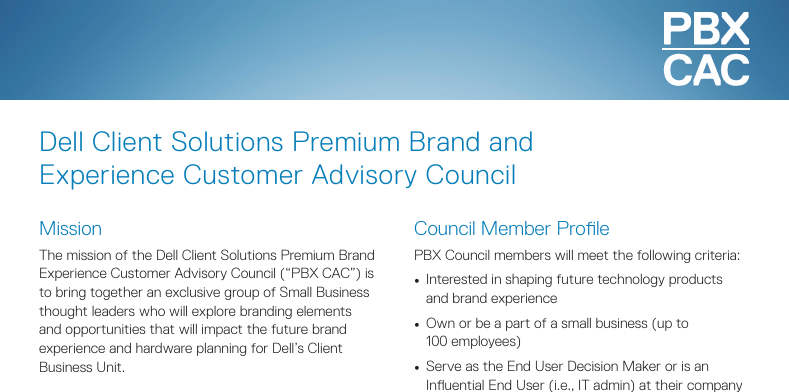
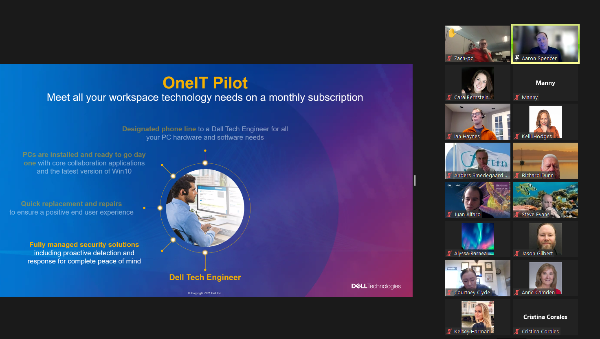

PBnX Customer Advisory Council
Led monthly virtual sessions with Small Business customers, partnering with Product Group and Sales to gather actionable insights that informed future product development. Owned program budget, customer recruitment strategy, session planning, executive speaker preparation, and post-event reporting. Successfully integrated DVT2 beta testing into the program, enabling customers to evaluate pre-release hardware and provide direct feedback to engineering teams.
Apple Compete
Led monthly virtual sessions with Apple users, creating a structured feedback channel for Product Group to better understand cross-platform customer experiences and inform product strategy. Collaborated with LOB leads on content development and speaker readiness, while incorporating DVT2 beta testing into the program, capturing comparative insights between Dell devices and participants' existing Apple ecosystems.

